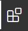
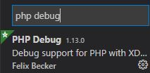
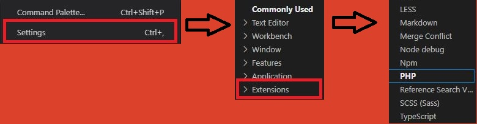
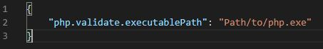
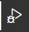
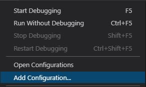
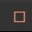
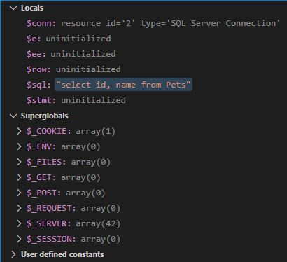

Debugging PHP with Visual Studio Code
Step 1: Turn off your apache in xampp and go to your php.ini file, scroll to the bottom. Paste these properties:
-
[XDebug]
zend_extension = "c:\xampp\php\ext\php_xdebug.dll"
xdebug.default_enable = 1
xdebug.idekey="xdebug" ; (note: use the same key in your web browser extension)
xdebug.remote_autostart = 1
xdebug.profiler_append = 0
xdebug.profiler_enable = 0
xdebug.profiler_enable_trigger = 1
xdebug.profiler_output_dir = "c:\xampp\tmp"
xdebug.profiler_output_name = "cachegrind.out.%t-%s"
xdebug.remote_connect_back = 0
xdebug.remote_enable = 1
xdebug.remote_handler = "dbgp"
xdebug.remote_mode=req
xdebug.remote_connect_back=0
xdebug.remote_host = "127.0.0.1"
xdebug.remote_log = "c:\xampp\tmp\xdebug.txt"
xdebug.remote_port = 9000
xdebug.trace_output_dir = "c:\xampp\tmp"
xdebug.remote_cookie_expire_time = -9999
xdebug.show_local_vars = 0
xdebug.max_nesting_level = 1000
Note: depending where your xampp php files are located, the drive letter may differ on your local machine from the file paths listed above.
Step 2: Open Visual Studio Code and click the block icon on the left pane. This is the extensions panel.

Type in 'PHP Debug', you should see a result with PHP Debug by Felix Becker.

Install the extension and click the settings gear on the bottom left hand corner of the window.
Step 3: Go to settings, extensions, then PHP on the bottom of the list.

Look for a 'Edit in Settings.json' link.

Here you will see, "php.validate.executablePath". This requires the path to your php.exe file in your xampp/php folder.

Step 4: Once the path has been added, save the file and close out of the current tab. Open a php file of your choice from the xampp/htdocs folder.
Click on the debug button on the left pane as shown to proceed to the next step.

Step 5: Click the 'Run' category in the task bar on top of window and go to 'Add Configuration'.

A dropdown will appear from top of window, select the 'PHP' option and it will bring you too a launch.json file.
Save and close the launch.json file and select 'Launch currently open script' from combobox next to green play button in the upper left hand corner of window.
Step 6: Select your opened php file as described in step 4 and put a breakpoint within your php script. Then press the green play button.
Your debugger should be up and running as shown. 
Turn on apache in xampp and go to your browser. Type in localhost in the address bar / the path to your currently opened file in Visual Studio Code.
You should now see a yellow bar that starts from the breakpoint on the left side going across one line of code. If you do, you are now in debugging mode.
To exit debugging mode, press Shift+F5 on your keyboard or press the red stop square button on the debug panel on top of window.

Debugging Mode
In debugging mode, you can view the statuses of your local variables, arrays, php super global variables and more as they occur when you step over (F10 on keyboard) each line in your php code.

Note: you can open the debug console by going to View->Debug Console in Visual Studio Code tool bar.